Units (astropy.units)¶
Introduction¶
astropy.units handles defining and converting between physical units, and performing arithmetic with physical quantities (numbers with associated units).
Getting Started¶
>>> from astropy import units as u
>>> # Convert from parsec to meter
>>> u.pc.to(u.m)
3.0856776e+16
>>> cms = u.cm / u.s
>>> mph = u.mile / u.hour
>>> cms.to(mph, 1)
0.02236936292054402
>>> cms.to(mph, [1., 1000., 5000.])
array([ 2.23693629e-02, 2.23693629e+01, 1.11846815e+02])
Units that “cancel out” become a special unit called the “dimensionless unit”:
>>> u.m / u.m
Unit(dimensionless)
astropy is able to match compound units against the units it already knows about:
>>> (u.s ** -1).compose()
[Unit("Hz"), ...]
And it can convert between unit systems:
>>> u.Pa.to_system(u.cgs)
[Unit("1.000000e+01 Ba")]
astropy.units also handles equivalencies, such as that between wavelength and frequency. To use that feature, equivalence objects are passed to the to() conversion method. For instance, a conversion from wavelength to frequency doesn’t normally work:
>>> u.nm.to(u.Hz, [1000, 2000])
UnitsException: 'nm' (length) and 'Hz' (frequency) are not convertible
but by passing an equivalency list, in this case spectral(), it does:
>>> u.nm.to(u.Hz, [1000, 2000], equivalencies=u.spectral())
array([ 2.99792458e+14, 1.49896229e+14])
>>> u.nm.to(u.eV, [1000, 2000], equivs=u.spectral())
array([ 1.23984201, 0.61992101])
Also included in the astropy.units package is the Quantity object, which represents a numerical value with an associated unit. These objects support arithmetic with other numbers and Quantity objects and preserve their units:
>>> 15.1 * u.meter / (32.0 * u.second)
<Quantity 0.471875 m / (s)>
>>> 3.0 * u.kilometer / (130.51 * u.meter / u.second)
<Quantity 0.0229867443108 km s / (m)>
>>> (3.0 * u.kilometer / (130.51 * u.meter / u.second)).decompose()
<Quantity 22.9867443108 s>
Using astropy.units¶
See Also¶
- FITS Standard for units in FITS.
- The proposed IVOA standard for representing units in the VO.
- OGIP Units: A standard for storing units in OGIP FITS files.
- Standards for astronomical catalogues units.
- IAU Style Manual.
- A table of astronomical unit equivalencies
Reference/API¶
astropy.units.core Module¶
Core units classes and functions
Classes¶
| UnitsException | The base class for unit-specific exceptions. |
| UnitsWarning | The base class for unit-specific exceptions. |
| UnitBase | Abstract base class for units. |
| NamedUnit(st[, register, doc, format]) | The base class of units that have a name. |
| IrreducibleUnit(st[, register, doc, format]) | Irreducible units are the units that all other units are defined in terms of. |
| Unit(st[, represents, register, doc, format]) | The main unit class. |
| CompositeUnit(scale, bases, powers) | Create a composite unit using expressions of previously defined units. |
| PrefixUnit(st[, represents, register, doc, ...]) | A unit that is simply a SI-prefixed version of another unit. |
| UnrecognizedUnit(st) | A unit that did not parse correctly. |
Class Inheritance Diagram¶
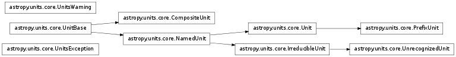
astropy.units.format Module¶
A collection of different unit formats.
Functions¶
| get_format([format]) | Get a formatter by name. |
Classes¶
| Generic() | A “generic” format. |
| CDS() | Support the Centre de Données astronomiques de Strasbourg Standards for Astronomical Catalogues 2.0 format. |
| Console() | Output-only format for to display pretty formatting at the console. |
| Fits() | The FITS standard unit format. |
| Latex() | Output LaTeX to display the unit based on IAU style guidelines. |
| Unicode() | Output-only format for to display pretty formatting at the console using Unicode characters. |
| Unscaled() | A format that doesn’t display the scale part of the unit, other than that, it is identical to the Generic format. |
| VOUnit() | The proposed IVOA standard for units used by the VO. |
Class Inheritance Diagram¶
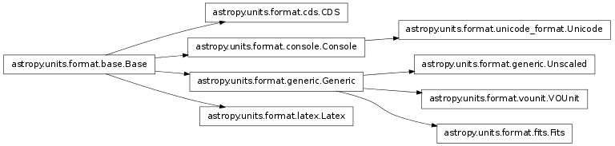
astropy.units.si Module¶
This package defines the SI units. They are also available in the astropy.units namespace.
| Unit | Description | Represents | Aliases | SI Prefixes |
|---|---|---|---|---|
| A | ampere: base unit of electric current in SI | ampere, amp | Y | |
| a | annum (a) | 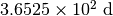 | annum | N |
| Angstrom | ångström: 10 ** -10 m | 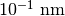 | AA, angstrom | N |
| arcmin | arc minute: angular measurement | 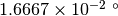 | arcminute | N |
| arcsec | arc second: angular measurement | 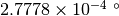 | arcsecond | N |
| C | coulomb: electric charge | coulomb | N | |
| cd | candela: base unit of luminous intensity in SI | candela | Y | |
| d | day (d) | 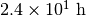 | day | N |
| deg | degree: angular measurement 1/360 of full rotation | 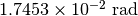 | degree | N |
| eV | Electron Volt | 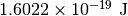 | electronvolt | N |
| F | Farad: electrical capacitance | 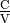 | Farad, farad | N |
| fortnight | fortnight | 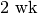 | N | |
| g | gram (g) | 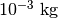 | gram | N |
| H | Henry: inductance | 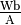 | Henry, henry | N |
| h | hour (h) | 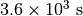 | hour, hr | N |
| Hz | Frequency | Hertz, hertz | N | |
| J | Joule: energy | 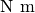 | Joule, joule | N |
| K | Kelvin: temperature with a null point at absolute zero. | Kelvin | Y | |
| kg | kilogram: base unit of mass in SI. | kilogram | Y | |
| l | liter: metric unit of volume | 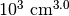 | L, liter | N |
| lm | lumen: luminous flux | lumen | N | |
| lx | lux: luminous emittence | 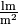 | lux | N |
| m | meter: base unit of length in SI | meter | Y | |
| mas | arc second: angular measurement | 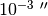 | N | |
| micron | micron: alias for micrometer (um) | 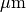 | N | |
| min | minute (min) |  |
minute | N |
| mol | mole: amount of a chemical substance in SI. | mole | Y | |
| N | Newton: force | 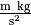 | Newton, newton | N |
| Ohm | Ohm: electrical resistance |  |
ohm | N |
| Pa | Pascal: pressure | 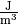 | Pascal, pascal | N |
| rad | radian: angular measurement of the ratio between the length on an arc and its radius | radian | Y | |
| S | Siemens: electrical conductance | 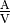 | Siemens, siemens | N |
| s | second: base unit of time in SI. | second | Y | |
| sday | Sidereal day (sday) is the time of one rotation of the Earth. | 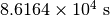 | N | |
| sr | steradian: unit of solid angle in SI | 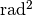 | steradian | N |
| t | Metric tonne | 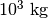 | tonne | N |
| T | Tesla: magnetic flux density | 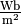 | Tesla, tesla | N |
| uas | arc second: angular measurement | 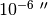 | N | |
| V | Volt: electric potential or electromotive force | 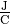 | Volt, volt | N |
| W | Watt: power | Watt, watt | N | |
| Wb | Weber: magnetic flux | 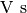 | Weber, weber | N |
| wk | week (wk) | 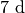 | week | N |
| yr | year (yr) | year | N |
astropy.units.cgs Module¶
This package defines the CGS units. They are also available in the top-level astropy.units namespace.
| Unit | Description | Represents | Aliases | SI Prefixes |
|---|---|---|---|---|
| abC | abcoulomb: CGS (EMU) of charge | abcoulomb | N | |
| Ba | Barye: CGS unit of pressure | 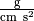 | Barye, barye | N |
| Bi | Biot: CGS (EMU) unit of current | 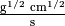 | Biot, abA, abampere, emu | N |
| C | coulomb: electric charge | coulomb | N | |
| cd | candela: base unit of luminous intensity in SI | candela | N | |
| cm | centimeter (cm) | centimeter | N | |
| D | Debye: CGS unit of electric dipole moment | 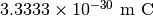 | Debye, debye | N |
| dyn | dyne: CGS unit of force | 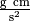 | dyne | N |
| erg | erg: CGS unit of energy | 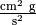 | N | |
| Fr | Franklin: CGS (ESU) unit of charge | 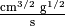 | Franklin, statcoulomb, statC, esu | N |
| G | Gauss: CGS unit for magnetic field | 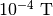 | Gauss, gauss | N |
| g | gram (g) | gram | N | |
| Gal | Gal: CGS unit of acceleration | 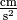 | gal | N |
| K | Kelvin: temperature with a null point at absolute zero. | Kelvin | N | |
| k | kayser: CGS unit of wavenumber | 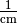 | Kayser, kayser | N |
| mol | mole: amount of a chemical substance in SI. | mole | N | |
| P | poise: CGS unit of dynamic viscosity | 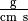 | poise | N |
| rad | radian: angular measurement of the ratio between the length on an arc and its radius | radian | N | |
| s | second: base unit of time in SI. | second | N | |
| sr | steradian: unit of solid angle in SI | steradian | N | |
| St | stokes: CGS unit of kinematic viscosity | 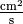 | stokes | N |
| statA | statampere: CGS (ESU) unit of current | 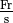 | statampere | N |
astropy.units.astrophys Module¶
This package defines the astrophysics-specific units. They are also available in the astropy.units namespace.
The mag unit is provided for compatibility with the FITS unit string standard. However, it is not very useful as-is since it is “orphaned” and can not be converted to any other unit. A future astropy magnitudes library is planned to address this shortcoming.
| Unit | Description | Represents | Aliases | SI Prefixes |
|---|---|---|---|---|
| adu | adu | N | ||
| AU | astronomical unit: approximately the mean Earth–Sun distance. | 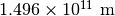 | au | N |
| barn | barn: unit of area used in HEP | 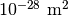 | N | |
| beam | beam | N | ||
| bin | bin | N | ||
| bit | bit | Y | ||
| byte | byte | Y | ||
| chan | chan | N | ||
| ct | count (ct) | count | N | |
| Jy | Jansky: spectral flux density | 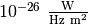 | Jansky, jansky | N |
| lyr | Light year | 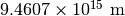 | lightyear | N |
| M_e | Electron mass | 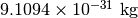 | N | |
| M_p | Proton mass | 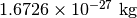 | N | |
| mag | Stellar magnitude. | Y | ||
| pc | parsec: approximately 3.26 light-years. | 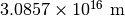 | parsec | N |
| ph | photon (ph) | photon | Y | |
| pix | pixel (pix) | pixel | N | |
| R | Rayleigh: photon flux | 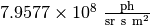 | Rayleigh, rayleigh | N |
| Ry | Rydberg: Energy of a photon whose wavenumber is the Rydberg constant | rydberg | N | |
| solLum | Solar luminance | L_sun | N | |
| solMass | Solar mass | M_sun | N | |
| solRad | Solar radius | R_sun | N | |
| Sun | Sun | N | ||
| u | Unified atomic mass unit | Da, Dalton | N | |
| vox | voxel (vox) | voxel | N |
astropy.units.imperial Module¶
This package defines colloquially used Imperial units. They are also available in the astropy.units namespace.
| Unit | Description | Represents | Aliases | SI Prefixes |
|---|---|---|---|---|
| ac | International acre | acre | N | |
| BTU | British thermal unit | btu | N | |
| cal | Thermochemical calorie: pre-SI metric unit of energy | calorie | N | |
| cup | U.S. | N | ||
| foz | U.S. | fluid_oz, fluid_ounce | N | |
| ft | International foot | foot | N | |
| gallon | U.S. | N | ||
| hp | Electrical horsepower | horsepower | N | |
| inch | International inch | N | ||
| kcal | Calorie: colloquial definition of Calorie | Cal, Calorie, kilocal, kilocalorie | N | |
| lb | International avoirdupois pound | pound | N | |
| mi | International mile | mile | N | |
| oz | International avoirdupois ounce | ounce | N | |
| pint | U.S. | N | ||
| quart | U.S. | N | ||
| tbsp | U.S. | tablespoon | N | |
| ton | International avoirdupois ton | N | ||
| tsp | U.S. | teaspoon | N | |
| yd | International yard | yard | N |
astropy.units.equivalencies Module¶
A set of standard astronomical equivalencies.
Functions¶
| spectral() | Returns a list of equivalence pairs that handle spectral wavelength, frequency, and energy equivalences. |
| spectral_density(sunit, sfactor) | Returns a list of equivalence pairs that handle spectral density with regard to wavelength and frequency. |